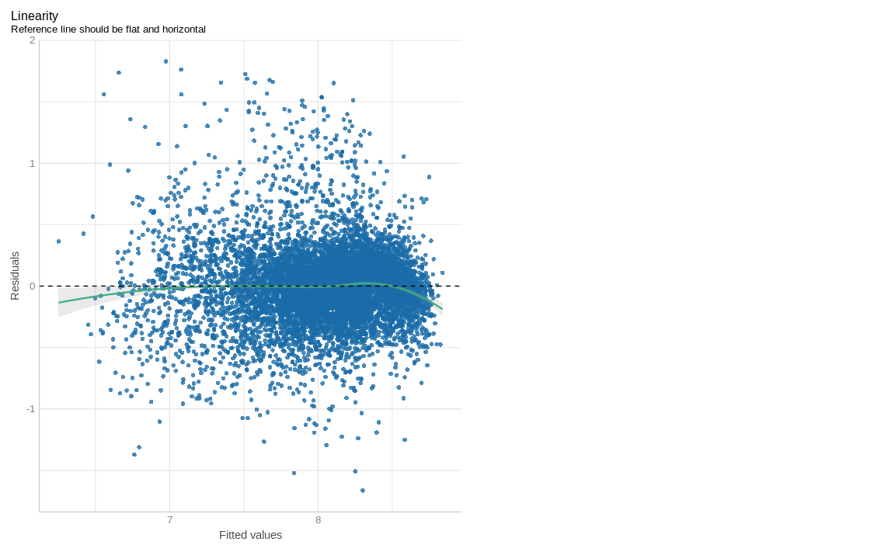

library(tidyverse)
library(alr4)
library(GGally)
library(parameters)
library(performance)
library(see)
library(car)
library(broom)
library(modelsummary)
library(texreg)
library(correlation)
library(patchwork)
library(lmtest)
library(sandwich)
library(clubSandwich)
knitr::opts_chunk$set(
fig.align = "center",
fig.width = 12,
fig.asp = 0.618,
fig.retina = 1,
out.width = "100%",
message = FALSE,
echo = TRUE
)
my_gof <- function(fit_obj, digits = 4) {
sum_fit <- summary(fit_obj)
stars <-
pf(sum_fit$fstatistic[1],
sum_fit$fstatistic[2],
sum_fit$fstatistic[3],
lower.tail=FALSE) %>%
symnum(corr = FALSE, na = FALSE,
cutpoints = c(0, .001,.01,.05, 1),
symbols = c("***","**","*"," ")) %>%
as.character()
list(
# `R^2` = sum_fit$r.squared %>% round(digits),
# `Adj. R^2` = sum_fit$adj.r.squared %>% round(digits),
# `Num. obs.` = sum_fit$residuals %>% length(),
`Num. df` = sum_fit$df[[2]],
`F statistic` =
str_c(sum_fit$fstatistic[1] %>% round(digits), " ", stars)
)
}
# Function for screening many regressors
screen_many_regs <-
function(fit_obj_list, ..., digits = 4, single.row = TRUE) {
if (class(fit_obj_list) == "lm")
fit_obj_list <- list(fit_obj_list)
if (length(rlang::dots_list(...)) > 0)
fit_obj_list <- fit_obj_list %>% append(rlang::dots_list(...))
# browser()
fit_obj_list %>%
screenreg(
custom.note =
map2_chr(., seq_along(.), ~ {
str_c("Model ", .y, " ", as.character(.x$call)[[2]])
}) %>%
c("*** p < 0.001; ** p < 0.01; * p < 0.05", .) %>%
str_c(collapse = "\n") ,
digits = digits,
single.row = single.row,
custom.gof.rows =
map(., ~my_gof(.x, digits)) %>%
transpose() %>%
map(unlist),
reorder.gof = c(3, 4, 5, 1, 2)
)
}AE05-03 Hedonic Prices and heteroscedasticity
Setup
Goals:
- Get a brief introduction to the Hedonic Prices model;
- Practice fitting linear regression in R;
- Test linearity assumption: visually and using a statistical tests;
- Practice linear transformation;
- Exerciser coefficients interpretation;
Exercise
1. Load the data
dta <-
alr4::MinnLand %>%
as_tibble()2. Draw box-plots of acrePrice versus year
Modify variable year creating a factor based on year: use function as.factor();
Play with the scale transformation of acrePrice to visualize data more meaningful:
- check help for
ggplot2::scale_*_continuous(trans = "_______") - check help for
ggplot2::scale_*_log10()
# dta %>%
# _________(________ = __________(________)) %>%
# ggplot() +
# aes(___ = ____, ___ = ____) +
# geom_________()3. Convert monetary values from current to constant prices
Create a table with GDP deflator rates
defl_dta <-
tibble(
year = 2002:2011,
defl = c(77.47, 78.91, 81.03, 83.56, 86.09,
88.4, 90.12, 90.8, 91.86, 93.78)
)
glimpse(defl_dta)Rows: 10
Columns: 2
$ year <int> 2002, 2003, 2004, 2005, 2006, 2007, 2008, 2009, 2010, 2011
$ defl <dbl> 77.47, 78.91, 81.03, 83.56, 86.09, 88.40, 90.12, 90.80, 91.86, 93…Join defl_dta to the dta data and create new object dta_const:
- see help on joining data here;
- convert
acrePriceto the constant prices. - remove deflator variable;
- convert variable year to a factor;
# dta_const <-
# _________ %>%
# left_join(_________, by = "_________") %>%
# _________(_________ = _________ * (_________),
# year = _________(_________)) %>%
# _________(- _________)
# glimpse(dta_const)HW. Built a box plot out of it with log transformation.
#4. Produce summary statistics
Use any function of your liking. Maybe data summary skim from modelsummary package.
#5. Produce a correlation matrix
Use: correlation::correlation()
# ___________ %>%
# ___________() %>%
# summary()6. Fit regression and summarize the results
use log(acrePrice) as a dependent variable
# fit1 <- lm(
# _____ ~ _____,
# data = _____
# )
# summary(fit1)Use performance and parameters package to summarize the regression results.
library(parameters)
library(performance)
# parameters(_____)
# performance(_____)Interpret the regression results
# screen_many_regs(fit1)7. Check linearity visually
# check_model(______, check = ______)9. Check the linearity using car package
library(car)
# residualPlots(______)11. Check multicollinearity
use vif() from car.
# ______(______)12. Check homoscedasticity visually
# check_model(______, check = c("linearity", "homogeneity"))13. Check homoscedasticity using statistical tests
library(lmtest)
# ______(______)14. Correct standard errors and interpret the results
library(sandwich)
# parameters(_____, vcov = "HC3")Solutions
Code
## 1. Load the data
dta <-
alr4::MinnLand %>%
as_tibble()
glimpse(dta)Rows: 18,700
Columns: 9
$ acrePrice <dbl> 766, 733, 850, 975, 886, 992, 623, 1382, 855, 364, 807, 4…
$ region <fct> Northwest, Northwest, Northwest, Northwest, Northwest, No…
$ improvements <dbl> 0, 0, 4, 0, 62, 30, 0, 41, 0, 0, 13, 0, 51, 29, 0, 32, 0,…
$ year <dbl> 2002, 2003, 2002, 2003, 2002, 2003, 2003, 2003, 2003, 200…
$ acres <int> 82, 30, 150, 160, 90, 120, 170, 100, 120, 160, 158, 83, 1…
$ tillable <dbl> 94, 63, 47, 86, NA, 83, 42, 35, 46, 10, 29, 36, 14, 71, 9…
$ financing <fct> title_transfer, title_transfer, title_transfer, title_tra…
$ crpPct <dbl> 0, 0, 0, 0, 0, 0, 0, 0, 0, 0, 0, 0, 0, 0, 0, 0, 0, 0, 0, …
$ productivity <int> NA, NA, NA, NA, NA, NA, NA, NA, NA, NA, NA, NA, NA, NA, N…Code
## 2. Draw boxplots of `acrePrice` versus `year`
dta %>%
mutate(year = as.factor(year)) %>%
ggplot() +
aes(x = year, y = acrePrice) +
geom_boxplot() +
scale_y_log10()Code
## 3. Convert monetary values from current to constant prices
defl_dta <-
tibble(
year = 2002:2011,
defl = c(77.47, 78.91, 81.03, 83.56, 86.09,
88.4, 90.12, 90.8, 91.86, 93.78)
)
glimpse(defl_dta)Rows: 10
Columns: 2
$ year <int> 2002, 2003, 2004, 2005, 2006, 2007, 2008, 2009, 2010, 2011
$ defl <dbl> 77.47, 78.91, 81.03, 83.56, 86.09, 88.40, 90.12, 90.80, 91.86, 93…Code
dta_const <-
dta %>%
left_join(defl_dta, by = "year") %>%
mutate(acrePrice = acrePrice / (defl / 100),
year = as.factor(year)) %>%
select(-defl)
glimpse(dta_const)Rows: 18,700
Columns: 9
$ acrePrice <dbl> 988.7698, 928.9063, 1097.1989, 1235.5848, 1143.6685, 1257…
$ region <fct> Northwest, Northwest, Northwest, Northwest, Northwest, No…
$ improvements <dbl> 0, 0, 4, 0, 62, 30, 0, 41, 0, 0, 13, 0, 51, 29, 0, 32, 0,…
$ year <fct> 2002, 2003, 2002, 2003, 2002, 2003, 2003, 2003, 2003, 200…
$ acres <int> 82, 30, 150, 160, 90, 120, 170, 100, 120, 160, 158, 83, 1…
$ tillable <dbl> 94, 63, 47, 86, NA, 83, 42, 35, 46, 10, 29, 36, 14, 71, 9…
$ financing <fct> title_transfer, title_transfer, title_transfer, title_tra…
$ crpPct <dbl> 0, 0, 0, 0, 0, 0, 0, 0, 0, 0, 0, 0, 0, 0, 0, 0, 0, 0, 0, …
$ productivity <int> NA, NA, NA, NA, NA, NA, NA, NA, NA, NA, NA, NA, NA, NA, N…Code
dta_const %>%
ggplot() +
aes(x = year, y = acrePrice) +
geom_boxplot() +
scale_y_log10() +
labs(y = "Price per acre in constant 2010 USD")Code
## 4. Produce summary statistics
dta_const %>% datasummary_skim(output = "markdown")Warning in datasummary_skim_numeric(data, output = output, fmt = fmt, histogram
= histogram, : The histogram argument is only supported for (a) output types
"default", "html", or "kableExtra"; (b) writing to file paths with extensions
".html", ".jpg", or ".png"; and (c) Rmarkdown or knitr documents compiled to PDF
or HTML. Use `histogram=FALSE` to silence this warning.| Unique (#) | Missing (%) | Mean | SD | Min | Median | Max | |
|---|---|---|---|---|---|---|---|
| acrePrice | 13937 | 0 | 3205.7 | 2180.6 | 129.2 | 2861.2 | 19009.0 |
| improvements | 90 | 0 | 4.5 | 12.9 | 0.0 | 0.0 | 100.0 |
| acres | 596 | 0 | 112.7 | 128.5 | 1.0 | 80.0 | 6970.0 |
| tillable | 102 | 6 | 80.7 | 22.8 | 0.0 | 92.0 | 100.0 |
| crpPct | 101 | 0 | 4.2 | 17.2 | 0.0 | 0.0 | 100.0 |
| productivity | 96 | 52 | 66.6 | 13.5 | 1.0 | 68.0 | 99.0 |
Code
## 5. Produce a correlation matrix
library(correlation)
dta_const %>%
correlation() %>%
summary()# Correlation Matrix (pearson-method)
Parameter | productivity | crpPct | tillable | acres | improvements
---------------------------------------------------------------------------
acrePrice | 0.38*** | -0.19*** | 0.08*** | -0.18*** | 0.22***
improvements | -0.13*** | -0.04*** | -0.36*** | -0.06*** |
acres | -0.03** | 0.08*** | 0.08*** | |
tillable | 0.34*** | 0.01 | | |
crpPct | -0.22*** | | | |
p-value adjustment method: Holm (1979)Code
## 6. Fit the basic regression and summarize the results
fit1 <- lm(
log(acrePrice) ~ crpPct + acres + region +
year + tillable + productivity,
data = dta_const
)
summary(fit1)
Call:
lm(formula = log(acrePrice) ~ crpPct + acres + region + year +
tillable + productivity, data = dta_const)
Residuals:
Min 1Q Median 3Q Max
-1.6635 -0.1658 -0.0075 0.1478 1.8278
Coefficients:
Estimate Std. Error t value Pr(>|t|)
(Intercept) 6.206e+00 3.095e-02 200.493 < 2e-16 ***
crpPct -3.882e-03 2.547e-04 -15.244 < 2e-16 ***
acres -3.427e-04 3.916e-05 -8.749 < 2e-16 ***
regionWest Central 6.183e-01 1.379e-02 44.821 < 2e-16 ***
regionCentral 8.926e-01 1.533e-02 58.228 < 2e-16 ***
regionSouth West 7.114e-01 1.387e-02 51.278 < 2e-16 ***
regionSouth Central 8.422e-01 1.489e-02 56.564 < 2e-16 ***
regionSouth East 9.267e-01 1.726e-02 53.701 < 2e-16 ***
year2003 6.401e-02 2.190e-02 2.923 0.00347 **
year2004 2.329e-01 2.162e-02 10.771 < 2e-16 ***
year2005 3.628e-01 2.137e-02 16.980 < 2e-16 ***
year2006 3.749e-01 2.140e-02 17.517 < 2e-16 ***
year2007 4.694e-01 2.134e-02 22.001 < 2e-16 ***
year2008 6.607e-01 2.089e-02 31.622 < 2e-16 ***
year2009 6.599e-01 2.226e-02 29.644 < 2e-16 ***
year2010 7.693e-01 2.204e-02 34.903 < 2e-16 ***
year2011 7.890e-01 2.442e-02 32.306 < 2e-16 ***
tillable 1.293e-03 2.308e-04 5.604 2.16e-08 ***
productivity 9.111e-03 3.158e-04 28.852 < 2e-16 ***
---
Signif. codes: 0 '***' 0.001 '**' 0.01 '*' 0.05 '.' 0.1 ' ' 1
Residual standard error: 0.3158 on 8768 degrees of freedom
(9913 observations deleted due to missingness)
Multiple R-squared: 0.6362, Adjusted R-squared: 0.6354
F-statistic: 851.8 on 18 and 8768 DF, p-value: < 2.2e-16Code
parameters(fit1)Parameter | Coefficient | SE | 95% CI | t(8768) | p
-----------------------------------------------------------------------------------
(Intercept) | 6.21 | 0.03 | [ 6.15, 6.27] | 200.49 | < .001
crpPct | -3.88e-03 | 2.55e-04 | [ 0.00, 0.00] | -15.24 | < .001
acres | -3.43e-04 | 3.92e-05 | [ 0.00, 0.00] | -8.75 | < .001
region [West Central] | 0.62 | 0.01 | [ 0.59, 0.65] | 44.82 | < .001
region [Central] | 0.89 | 0.02 | [ 0.86, 0.92] | 58.23 | < .001
region [South West] | 0.71 | 0.01 | [ 0.68, 0.74] | 51.28 | < .001
region [South Central] | 0.84 | 0.01 | [ 0.81, 0.87] | 56.56 | < .001
region [South East] | 0.93 | 0.02 | [ 0.89, 0.96] | 53.70 | < .001
year [2003] | 0.06 | 0.02 | [ 0.02, 0.11] | 2.92 | 0.003
year [2004] | 0.23 | 0.02 | [ 0.19, 0.28] | 10.77 | < .001
year [2005] | 0.36 | 0.02 | [ 0.32, 0.40] | 16.98 | < .001
year [2006] | 0.37 | 0.02 | [ 0.33, 0.42] | 17.52 | < .001
year [2007] | 0.47 | 0.02 | [ 0.43, 0.51] | 22.00 | < .001
year [2008] | 0.66 | 0.02 | [ 0.62, 0.70] | 31.62 | < .001
year [2009] | 0.66 | 0.02 | [ 0.62, 0.70] | 29.64 | < .001
year [2010] | 0.77 | 0.02 | [ 0.73, 0.81] | 34.90 | < .001
year [2011] | 0.79 | 0.02 | [ 0.74, 0.84] | 32.31 | < .001
tillable | 1.29e-03 | 2.31e-04 | [ 0.00, 0.00] | 5.60 | < .001
productivity | 9.11e-03 | 3.16e-04 | [ 0.01, 0.01] | 28.85 | < .001Code
performance(fit1)# Indices of model performance
AIC | BIC | R2 | R2 (adj.) | RMSE | Sigma
---------------------------------------------------------
1.458e+05 | 2.871e+05 | 0.636 | 0.635 | 0.315 | 0.316Code
## 7. Check linearity visually
check_model(fit1, check = "linearity")
Code
## 9. Check the linearity using `car` package
library(car)
residualPlots(fit1) Test stat Pr(>|Test stat|)
crpPct 3.1748 0.001504 **
acres 8.0814 7.254e-16 ***
region
year
tillable 7.0455 1.988e-12 ***
productivity 8.9647 < 2.2e-16 ***
Tukey test -4.6781 2.895e-06 ***
---
Signif. codes: 0 '***' 0.001 '**' 0.01 '*' 0.05 '.' 0.1 ' ' 1Code
## 11. Check multicollinearity
vif(fit1) GVIF Df GVIF^(1/(2*Df))
crpPct 1.062392 1 1.030724
acres 1.049987 1 1.024689
region 1.506529 5 1.041832
year 1.043821 9 1.002386
tillable 1.175075 1 1.084009
productivity 1.596714 1 1.263612Code
## 12. Check homoscedasticity visually
check_model(fit1, check = c("linearity", "homogeneity"))Code
## 13. Check homoscedasticity using statistical tests
library(lmtest)
bptest(fit1)
studentized Breusch-Pagan test
data: fit1
BP = 1380.1, df = 18, p-value < 2.2e-16Code
## 14. Correct standard errors
library(lmtest)
library(sandwich)
parameters(fit1, vcov = "HC3")Parameter | Coefficient | SE | 95% CI | t(8768) | p
-----------------------------------------------------------------------------------
(Intercept) | 6.21 | 0.05 | [ 6.11, 6.30] | 132.38 | < .001
crpPct | -3.88e-03 | 2.93e-04 | [ 0.00, 0.00] | -13.23 | < .001
acres | -3.43e-04 | 4.23e-05 | [ 0.00, 0.00] | -8.10 | < .001
region [West Central] | 0.62 | 0.02 | [ 0.58, 0.65] | 35.81 | < .001
region [Central] | 0.89 | 0.02 | [ 0.85, 0.93] | 44.76 | < .001
region [South West] | 0.71 | 0.02 | [ 0.68, 0.75] | 41.24 | < .001
region [South Central] | 0.84 | 0.02 | [ 0.81, 0.88] | 45.66 | < .001
region [South East] | 0.93 | 0.02 | [ 0.88, 0.97] | 43.14 | < .001
year [2003] | 0.06 | 0.02 | [ 0.02, 0.11] | 2.65 | 0.008
year [2004] | 0.23 | 0.02 | [ 0.19, 0.28] | 10.00 | < .001
year [2005] | 0.36 | 0.02 | [ 0.32, 0.41] | 15.88 | < .001
year [2006] | 0.37 | 0.02 | [ 0.33, 0.42] | 16.57 | < .001
year [2007] | 0.47 | 0.02 | [ 0.43, 0.51] | 20.89 | < .001
year [2008] | 0.66 | 0.02 | [ 0.62, 0.70] | 30.56 | < .001
year [2009] | 0.66 | 0.02 | [ 0.62, 0.70] | 29.22 | < .001
year [2010] | 0.77 | 0.02 | [ 0.73, 0.81] | 34.33 | < .001
year [2011] | 0.79 | 0.02 | [ 0.74, 0.84] | 31.74 | < .001
tillable | 1.29e-03 | 3.89e-04 | [ 0.00, 0.00] | 3.32 | < .001
productivity | 9.11e-03 | 4.25e-04 | [ 0.01, 0.01] | 21.42 | < .001